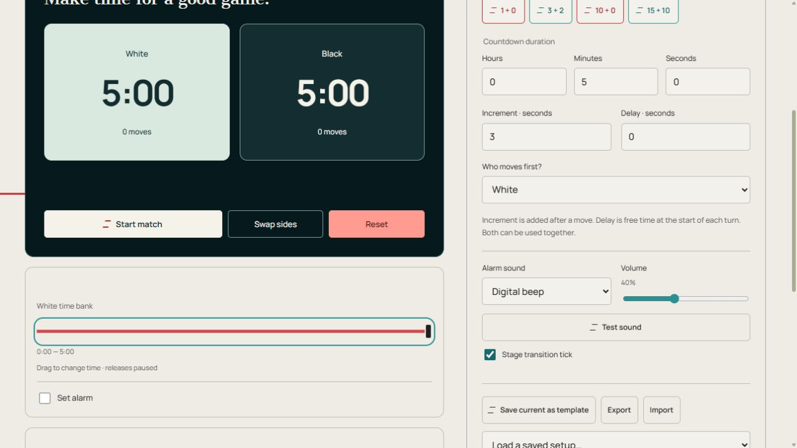

Chess Timer
Online two-player chess clock with editable time controls, increment, delay and turn handoff.
Chess
Tap your active clock or press Space to end your turn.
Keep this tab open. Mobile and background alarms depend on your browser and device. After a reload, saved sessions return paused.
How it works and advice
How the Chess Timer works
The online chess timer gives White and Black independent clocks. Choose a time-control preset or enter starting time in hours, minutes and seconds. Select who moves first, then press Start match. Tap the active player clock after a move to stop that clock and start the opponent’s.
Increment is added to the player’s remaining time after a completed move. Delay is a grace period at the beginning of each turn before that player’s time starts decreasing. The two settings are independent and can be used together. Pausing preserves unused delay for the current turn.
Space switches players during a running match when focus is outside an input or button. Swap sides changes the visual arrangement without changing the clocks. Move counts track completed handoffs. When a player’s time reaches zero, both clocks stop; reset the match to play again.
Set up and run the timer
- Choose a time-control template and review the starting duration, Increment, Delay and Who moves first?.
- Tap a duration number for the circular dial. Turn clockwise to add time or counterclockwise to subtract, then Apply. You can also type a number. Close discards the dial draft.
- Start match, then tap the active clock after each move. Pause holds both clocks.
- Correct a player’s time with its slider while paused, then Resume. Reset prepares a new match.
Controls at a glance

- Start / Pause — Run, hold or resume this clock.
- Reset — Return to the configured beginning.
- Test sound — Check the selected sound and device volume.
- Start match / Pause / Resume
- Starts or holds both-player timing.
- White / Black clock
- Tap the active clock to complete a move. Space also switches during play when focus is outside a control.
- Swap sides
- Changes visual arrangement without altering time banks.
- Reset
- Clears the match and restores starting time.
- White / Black time bank
- Drag to correct remaining time; this pauses play. A player’s Set alarm uses time consumed from the initial bank.
- Fullscreen
- Enlarges the dark clock. Leave with the exit control or Escape where supported. Phone and browser support varies.
Settings and saved setups
- Alarm sound / Volume / Test sound
- Choose gong, bell, beep or Off, set volume and test without starting the clock.
- Save current as template / Load a saved setup…
- Enter a name and choose Save setup; Cancel closes the naming dialog. Choose a saved name to load that configuration. Reusing a name replaces that template. Templates store settings, not timing reports.
- Remove saved setup
- Removes the selected named configuration, not the timer page.
- Export / Import
- Export downloads a JSON setup; Import loads a setup exported from the same timer type. Export CSV, where present, downloads results instead.
- Outlined star / Make start timer
- The star adds this page to the favorites row on the main page and other timers. Press it again to remove it. Make start timer chooses the timer that opens from the home page.
- Sign in with Google / Sign out / My timers / Load synced settings
- The account control signs in or out. My timers lists saved custom timers. Load synced settings loads received account changes; pause a running timer first.
- Stage transition tick
- Turns the short handoff click on or off separately from stage alarms.
- Keyboard shortcuts
- Space starts or pauses; during play it hands over. Shortcuts are inactive while focus is inside a control.
- Increment / Delay / Who moves first?
- Increment adds seconds after a move. Delay gives free seconds at the start of a turn. Both can be used together.
Example: a three-minute game with increment
Choose 3 + 2: each player starts with three minutes and receives two seconds after completing a move. Leave Delay zero unless your agreed control includes it. Start match, then tap the active player clock after each move.
Other ways to use it
- A longer casual game
- A match with a turn delay
Practical advice
- Agree the starting time, increment and delay before the first move.
- Place the device where both players can comfortably reach the active clock.
- Tap once after completing your move and check which clock is active.
- Pause for a genuine interruption instead of letting one player lose time while the game is stopped.
- Keep the page open and use a dedicated physical clock when your event requires one.
Saving, sound and browser limits
Settings, named templates, custom timers and favorites save in this browser. Sign in with Google at the top right to sync saved setups. If Load synced settings appears, pause before loading. Saved-setup sync does not synchronize live clocks across devices.
Keep this tab open and test sound on the device you will use. Phones and browsers can delay alarms in background tabs or while locked. Reload restores saved clocks paused; closing the page does not keep a live alarm running.